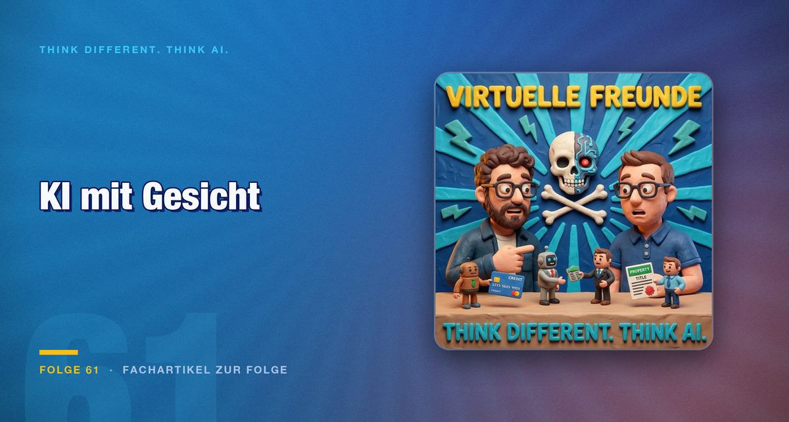

Folge 61 · Fachartikel zur Folge
KI mit Gesicht: Warum Metas Muse und OpenAIs Dots mehr sind als Spielerei
Ein Assistent, der per E-Mail und WhatsApp erreichbar ist, und kleine Figuren für einzelne Aufgaben. Die Oberfläche der KI wird persönlicher. Ob das der richtige Weg ist, entscheidet sich an der Benutzerführung.

Die Wette in dieser Folge war eigentlich eine Wette über Weihnachten. In der vorigen Folge hatte Mark Metas kleines Gerät für den Schlüsselbund belächelt und versprochen, Jens zum Essen einzuladen, falls darüber bis Weihnachten noch jemand spricht. Es dauerte keine zwei Wochen. Die Aufnahme entstand deshalb am selben Tisch in Karlsruhe, mit Burger und Radler, und darin geht es um die Frage, warum KI jetzt ein Gesicht bekommt.
Vom Modell zur Figur
Auffällig ist, wie die Anbieter ihre Produkte benennen. Jens beschreibt, wie er in den Gesprächen mit anderen Anbietern immer dieselbe Frage hört: Ist das jetzt Modell 5.5 Sol, schon 5.6 oder doch Fable? Muse verzichtet auf diese Ebene. Das Modell dahinter darf wechseln, der Name bleibt. Jens hält das für einen geschickten Zug: Die KI wird aus der Welt der Versionsnummern geholt und in eine Figur mit eigenem Namen überführt.
Mark hält die Personifizierung für gewollt, aber den spielerischen Teil für albern. Entscheidend sei etwas anderes. Ein System, das auf Sprache ausgelegt ist statt auf ein Textfeld, verhält sich anders. Wer per Sprache arbeitet, bekommt keine Tabellen vorgelesen. Dazu kommt ein Fingerabdrucksensor am Gerät, der Käufe bestätigt und die Aufnahme erst startet, wenn man ihn berührt. Jens findet diese Lösung sauberer als bei Geräten, die versehentlich mithören.
Dots: Viele kleine Helfer oder ein Dirigent?
Der zweite Teil gilt OpenAIs Dots. Die Figuren leben auf dem Rechner und entstehen für einzelne Aufgaben: für eine Fehlermeldung, eine Mail, eine Excel-Datei. Mark beschreibt eine Vorführung am selben Morgen, bei der ein kleiner Avatar auf die Folie zeigte, über die gerade gesprochen wurde. Die zeigende, unterstützende Funktion hält er für echte Hilfe. Viele kleine Agenten auf dem Bildschirm dagegen sind für ihn ein Fehler. Ein orchestrierender Agent, der die Arbeit verteilt, wäre die bessere Form.
Diese Unterscheidung lohnt sich, weil sie Verantwortung verteilt. Wer dreißig Figuren offen laufen lässt, muss wissen, welche davon etwas verändert und wer dafür geradesteht. Ein Dirigent bündelt diese Entscheidung an einer Stelle.
Die Geschichte ist älter als die Technik
Jens ordnet das historisch ein. Der persönliche Computer war schon der persönliche Zugang zu den großen Rechnern. Die Science-Fiction hatte ihre Assistenten längst: Bit aus Tron, der nur Ja und Nein sagen konnte, Professor Simon bei Captain Future, die Sprachsteuerung bei Star Trek, Data.
Und Karl Klammer. Microsofts Büroklammer sollte in Word die Hilfe sein und wurde zum Gespött. Die Idee dahinter war gut, sagt Jens, die Umsetzung nicht. Mark stellt die Frage, die sich daraus ergibt: Wenn früher Karl Klammer die Antwort auf das komplizierte Word war, sind es heute Muse und Dots?
„Die Idee dahinter war ja gut. Die Umsetzung war halt nur nicht gut.“
Das eigentliche Problem heißt Tokens
Mark hält dagegen, dass all das Tokens verbrennt. Er fragt, ob Tokens am Ende eine Grundversorgung werden wie Strom, Gas und Wasser. Jens glaubt zunächst an mehr Verbrauch: Avatare geben mehr Menschen einen bequemeren Zugang zur KI, und mehr Zugang bedeutet mehr Anfragen. Die Kosten sinken danach über lokale und schnellere Modelle, nicht über die Figur selbst.
Diese Rechnung ist plausibel, aber sie ist eine Erwartung. Die Folge liefert dafür keine Zahlen, und die Angaben zu Abopreisen und Token-Geschenken im Audio lassen sich nicht sicher zuordnen. Wer solche Modelle einführt, sollte den Verbrauch selbst messen, bevor er einen Avatar für alle ausrollt.
Fazit
Ob Muse oder Dots, die Richtung ist dieselbe: KI soll dort ankommen, wo man ohnehin schreibt und spricht. Der Name und das Gesicht machen das zugänglicher, sie lösen aber nicht die Fragen nach Verantwortung und Kosten. Ein Assistent, dem man Dinge schickt, wie man sie Freunden schickt, braucht klare Regeln, was er damit tun darf.
Für die Praxis heißt das: Prüfen Sie, welche Aufgaben ein Avatar übernehmen soll, und welche Entscheidungen bei einem Menschen bleiben. Die Benutzerführung entscheidet darüber mehr als die Figur.